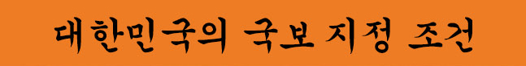
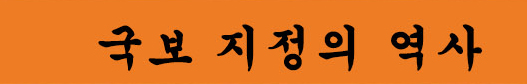

문화재보호법 제23조(보물 및 국보의 지정)
② 문화재청장은 제1항의 보물에 해당하는 문화재 중 인류문화의 관점에서 볼 때 그 가치가 크고 유례가 드문 것을 문화재위원회의 심의를 거쳐 국보로 지정할 수 있다.
③ 제1항과 제2항에 따른 보물과 국보의 지정기준과 절차 등에 필요한 사항은 대통령령으로 정한다.
한국에서는 건축물을 비롯한 유형 문화재 가운데 가치가 높은 문화 유산을 보물이라 하며, 이 보물 중에서 특히 역사적·학술적·예술적·기술적 가치가 크다고 인정 받은 유산을 문화재위원회에서 심사하여 별도로 국보로 지정한다
국보로 지정될 조건은 다음과 같다.
첫째, 보물급 문화재 중에서 제작연대가 오래된 것.
둘째, 한 시대를 대표하는 것.
셋째, 제작의 의장이나 기술이 뛰어난 것.
넷째, 형태·품질·용도가 특이한 것.
다섯째, 역사적 인물과 관계가 깊거나 그가 만든 것.
이렇게 국보로 지정되는 과정은 크게 두 가지가 있는데 하나는 특별시장·광역시장·도지사가 문화재청장에게 등록을 신청하는 것(이후 문화재 위원회의 심의가 이뤄진다), 둘째로 매장 문화재나 새로운 문화재의 발견이 있을 경우 문화재청장의 직권으로 문화재의 지정 조사를 실시하여 지정한다.
이를 통해 국보는 문화재보호법의 보호대상이 되어 현상을 변경하거나 이동, 매매할 경우 문화재청장에게 별도의 허가를 받아야 하며(보호물이나 보호구역의 현상변경도 마찬가지) 정부와 지방 자치 단체는 보존 등에 필요한 경비를 보조할 수 있다.

국보 지정의 연혁에 따르면 일제강점기 때 《조선보물고적명승 천연기념물 보존령》에 의해 지정된 것이 시초라고 한다. 당시 문화재를 지정할 때 조선총독부 건물에서 가까운 순서대로 정했다고 한다. 그래서 국보 제1호는 남대문(숭례문)이 되었다는 일화가 있다. 같은 이유로 보물 1호는 흥인지문(동대문)이다.
다만 이 번호의 경우 말 그대로 분류 등의 행정 편의를 위해 붙어 있는 거지, 번호에 특별한 의미는 없다. 즉 숭례문이 국보 1번이라고 하여 이것이 우리나라에서 제일 중요한 국보가 아니라는 얘기. 숭례문을 말할 때 '국보 1호'를 굳이 강조하기도 하는데 이는 사람들이 1호라고 하면 뭔가 더 있어보이는 착각을 이용한 마케팅에 가깝다. 국보나 보물의 번호는 단순한 지정 순서에 따라 붙였을 뿐이며, 지정 해제 사유가 생겨 국보/보물에서 지정 해제되면 비는 번호는 채우지 않고 그 번호는 그대로 공번이 된다.
국보와 보물의 지정번호는 그 시행 목적이 일제의 행정 편의로부터 시작되었다는 지적과 국보의 가치와 번호를 혼동하는 일 때문에, 국보 번호를 철폐하자는 의견이 지속되어 왔고, 드디어 국보 지정 번호는 2022년부터 문화재보호법 시행령 개정에 의해 교과서, 표지판 등에서 사라지게 되었다.
국보 제 2호
원각사지 십층석탑
조선 세조 13년, 1467년에 세조의 왕명으로 원각사가 지어질 때 함께 건조된 석탑. 현재 탑골공원에 있다
국보 제 3호
서울 북한산 신라 진흥왕 순수비
신라 제24대 임금 진흥왕이 6세기 중반, 고구려를 한강 유역에서, 백제를 관산성 전투에서 물리치고 새로 정복한 한반도 중부지방의 한강 유역을 직접 순시하고 북한산 비봉 정상에 설치한 비석으로 지금까지 알려진 진흥왕 순수비 4기 중 하나이다.
국보 제 4호
여주 고달사지 승탑
경기도 여주시 고달사지에 있는, 화강암으로 만들어진 고려시대 초기에 만들어진 것으로 추정되는 승탑.
^
TOP